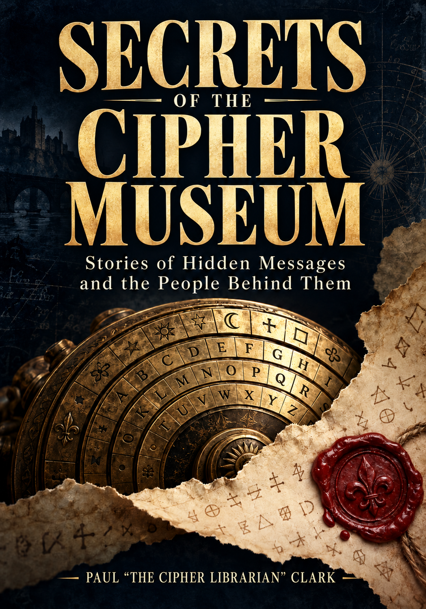

History you can enter
Secrets of the
Cipher Museum
Stories of Hidden Messages
and the People Behind Them
Discover how people learned to read other people’s secrets—and what happened when they did. Then enter Cipher Museum and try the ideas yourself.
Book preview · Publication details to follow

Twenty true investigations
A secret becomes readable.
What happens next?
Unidentified letters in a French archive restore a queen’s voice. A British admiral must reveal a German proposal without exposing his service’s access. A codebreaker reads a smuggler’s orders after the chance to intervene has passed.
Secrets of the Cipher Museum follows hidden messages into the decisions they make possible—and the questions they leave unresolved. The recovery of Copiale in 2011, the Zodiac 340 cipher in 2020 and Mary Stuart’s letters in 2023 brings the story into the work of modern researchers.
No mathematical background is needed. Eight original diagrams and six documentary images help where the method matters. Chapter links and QR codes lead to free exhibits where you can compare readings, test an assumption and inspect what a published recovery establishes. The historical narrative is complete without a browser.
Before you begin
A few questions about the book
How does it sit alongside The Code Book and The Codebreakers?
The question running through this book is what people could prove and do once they could read a secret. Mary Stuart’s correspondence frames the investigations, which reach the modern recoveries of Copiale, Z340 and her lost letters. Each chapter offers a related museum activity in reading, testing or judging evidence. Kahn and Singh are acknowledged predecessors in the notes.
Am I reading history or solving a mystery?
The prologue and twenty historical chapters are nonfiction, with sources and uncertainties identified. Four optional invented slips lead to The Curator’s Sealed Letter, a separate fictional case. You can enjoy the whole historical narrative without solving a puzzle.
What can I try before the book is published?
Trace the route of Mary’s intercepted correspondence, follow the two coded versions of the Zimmermann Telegram, or replay part of the published Z340 solution. The replay checks an existing solution; it does not identify the murderer. These exhibits are free, and teaching models are labelled.
Keep exploring as you read
Find your chapter’s next door
Choose a chapter and try its invitation now, or return when you finish reading. These visits are optional and free. Teaching models are labelled; the book supplies the historical account.
Part I Chapters 1–6
Chapter 1
The queen’s other reader
Follow the delivery route. Where could a copy leave the channel while the letter continued on its way?
Optional envelope · Slip 1 of 4 →Chapter 2
The king’s unreadable orders
Change the teaching codebook’s seed, then separate a repeatable reading from a claim about the Iron Mask.
Chapter 3
The war inside the telegraph office
Try your own words in the route model. What can you infer before restoring the instruction?
Optional envelope · Slip 2 of 4 →Chapter 4
The telegram Britain could not simply reveal
Follow the two coded versions. What could Britain reveal without exposing its access?
Chapter 5
The message before the offensive
Change one character and inspect both stages. Consider when a correct reading would arrive too late.
Chapter 6
The codebreaker who told
Compare Yardley’s disclosure with the Zimmermann Telegram. Who gained knowledge, and who risked losing access?
Part II Chapters 7–14
Chapter 7
The millionaire’s hidden Shakespeare
Begin at Riverbank. In the linked evidence workbench, record a rule another reader could test without knowing your answer.
Chapter 8
The woman following the ships
Follow the radio traffic and the Bear Cat episode. What other record would connect a message to a person?
Chapter 9
The secret carried out of Poland
Repeat a letter, reset the rotors and reproduce the result. Then compare the historical message-key procedure.
Chapter 10
The cost of getting back in
Follow a candidate setting to a checked reading. Use the chapter to trace what the books from U-559 made possible.
Chapter 11
The ocean in the intercepts
Remove an additive in the JN-25 model. Notice why the exposed group still needs a codebook.
Chapter 12
The men who carried the code
Try the spelling exercise, then open a veteran’s oral history. What does the account add to the printed dictionary?
Chapter 13
The machine no one had seen
Follow the repeating structures. Which inference could you test against another stretch of material?
Chapter 14
The names inside the numbers
Compare pad reuse with the historical releases. Separate recovered text, gaps and editorial identifications.
Optional envelope · Slip 3 of 4 →
Part III Chapters 15–20
Chapter 15
The secret that could be published
Produce a shared value with small numbers. What would establish the other participant’s identity?
Chapter 16
Privacy leaves the laboratory
Encrypt and decrypt a number with toy RSA keys. What does a successful round trip tell you about their owner?
Chapter 17
The letters that marked the spaces
Compare the failed hypothesis with the recovered role of ordinary letters, then try the linked teaching model.
Optional envelope · Slip 4 of 4 →Chapter 18
The book that will not answer
Follow the manuscript images. Record an observation another reader can find before proposing a meaning.
Chapter 19
The message and the murderer
Replay a published solution and compare raw and normalised readings. What does the message establish about its author?
Chapter 20
A queen speaks again
Try the labelled modifier sign, then follow the research source to the surviving plaintext copies.
The four envelope links lead to a separate, original fictional investigation. You can collect the slips as you go, use their hints, or start that case directly.
An envelope is waiting for you
The Curator’s Sealed Letter
Four optional slips run through the book. Solve them to open a fictional document investigation in the museum, or start the case directly online. The challenge is not just finding readable words. It is deciding what those words justify.
Open the reader’s mystery →Try it free, with hints. No purchase or account required.
From the prologue · Opening excerpt
The letters without a name
The letters were in the catalogue. Their author was missing.
Pages of cipher lay among manuscripts in the Bibliothèque nationale de France, near material concerning Italian affairs in the early sixteenth century. A catalogue could bring a researcher to those pages. It could not tell the researcher whose words were hidden there.
George Lasry, Norbert Biermann and Satoshi Tomokiyo were looking for historical ciphers they might decipher. The unfamiliar signs were enough to interest them. They began without a famous name to guide the search.
Italian seemed a reasonable language to try. It failed. French offered a better prospect, but the manuscript resisted the simplest approach. A mark might stand for a letter, a syllable or a whole word. Some marks contributed nothing to the reading. The team had to decide which differences in handwriting mattered before a computer could count the signs reliably.
Gradually, fragments of language emerged. They carried the grammar of a woman writing about confinement and negotiation. Names began to suggest a particular household, a particular ambassador, a particular prisoner. The collection had been placed in the wrong historical neighbourhood.
The researchers now had two problems. They needed to extend their key until the letters could be read. They also needed to establish that the person appearing through those readings was really the person who had sent them. A recognisable name could guide the work; it could also make a mistaken reading dangerously persuasive.
Somewhere else in the archives, earlier readers had left evidence that could test the answer. Those readers had entered the correspondence while its author was alive. They had been working for her enemies.
The modern recovery would become public in 2023. To understand what it returned to history, we must first visit a different interception, in 1586, when the delivery of a queen’s letter could help determine whether she lived.
Excerpt © 2026 Paul “The Cipher Librarian” Clark. The prologue draws on George Lasry, Norbert Biermann and Satoshi Tomokiyo’s 2023 study of Mary Stuart’s recovered letters. It follows their published account; no scene or dialogue has been invented. This is an excerpt from the prologue. Chapter 20 follows the full recovery and what the letters reveal.
Explore the recovered letters →For libraries, classrooms and curious friends
Read. Compare. Discuss.
A suggested 30-minute session, with an optional 15-minute puzzle warm-up. Use one shared screen or individual devices. No purchase, account or previous codebreaking experience is required.
- Read · 5 minutes. Read the historical opening excerpt. Which details are observations, and which questions still need an answer?
- Investigate · 15 minutes. Open the fictional Sealed Letter case and choose “Start the investigation.” Use its codebook to read the dispatch, then compare the four initial records. Keep the fictional case separate from the historical excerpt.
- Decide · 10 minutes. Choose one additional record before making a finding. Explain what it changes and what remains uncertain.
Optional warm-up · 15 minutes. Try the four slips before entering the case. Use hints or answer reveals whenever helpful; solving them is optional.
Questions for discussion
- What can a catalogue description tell you—and how could a reading overturn it?
- What changes when the same message survives in two versions?
- Which statement in the fictional case is an observation, and which is an inference?
- What one additional source would most improve your confidence?
Work individually or in pairs. Finish by naming one claim the documents support and one they leave unresolved.
Start the group activity →